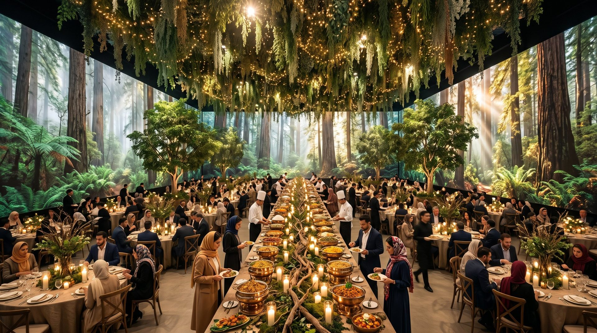

06 · Research
Seven lessons
from 23 launches.
Trucks, machinery and cars — what they did, what worked, what did not, and the lesson for Titan Diesel. Each lesson shaped one clear decision in our plan.
What the world taught us
01
The place is part of the argument
Mercedes' truck stop, the Hoover Dam, Porsche's three premieres.
In our planThe hall becomes a real city; the tractor enters that city on electric, diesel off.
02
Live proof, not claims
Volvo's Live Tests, Mercedes' Future Truck on the autobahn, BYD's live moves on stage.
In our planA real exit from the tunnel, in one uncut shot; no animation replaces the movement.
03
Exact numbers, independent witness
Mercedes' 1,047 km record confirmed independently; Windrose's logged data.
In our planOnly Titan Diesel's validated specs on stage; the air-quality reading is presented as symbolic, not as a technical claim.
04
A real customer on stage
Tesla's first customers; seven Hyundai trucks to seven real customers.
In our planIn the green city, the first fleet customer asks a real question and a trial on their own route is announced.
05
One lasting image
Volvo's tower, Mack's drone tunnel, Ford's train.
In our planGreen only once: the city stays grey until the tractor emerges; the main photo is the tractor at the tunnel mouth in the green city.
06
Silence against power
Volvo and Mercedes campaigns.
In our planThe diesel sound of the road approaches from inside the tunnel and suddenly cuts; the tractor emerges in silence.
07
A launch is a season, not a night
Mercedes' Experience World, MAN's toolkit, Scania's 81 events.
In our planA smaller version of the green city and the tonne-km desk carry on afterwards in dealerships and trade shows.
Drag or use the arrows
23 global cases
The launches we studied.
Open any case for the photos, what they did, the strengths and limits, and the lesson for Titan Diesel.

Next · Chapter 07